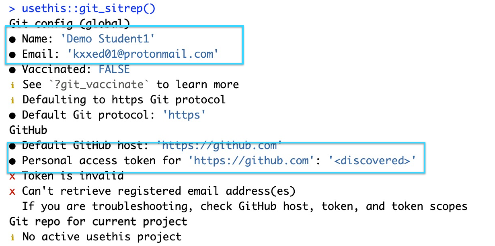

library(usethis)
use_git_config(user.name = "Demo Student1", user.email = "kxxed01@protonmail.com")Getting Started with GitHub and RStudio Server
What follows is a step by step path for getting the GitHub-RStudio Server connection up and running.1
1. Create GitHub account
This should be completed already. If not, refer to the screencast posted earlier.
2. Create a New Repository with only README.md
Log in to your GitHub account from a browser at github.com. At the dashboard, click the green “Create repository” button. Or, if you are on your own profile page, click on “Repositories”, then click the green “New” button.
How to fill this in:
Repository name: myrepo (or whatever you wish, we’ll delete this soon anyway).
Description: “Testing my setup” (or whatever, but some text is good for the README).
Public.
Click on the box to “Initialize this repository with” “Add a README file.”
For everything else, just accept the default.
Click the green “Create repository” button at the lower right.
3. Log into your account on rstudio.kzoo.edu
Use your KNET user name and password as instructed at the login page.
4. Configure RStudio with your Name and email used for GitHub
Before running this, be sure to replace the text shown with your username and the email you used for your GitHub account.
5. Set credentials in RStudio
Create and store your personal access token (PAT)
The personal access token (PAT) is used when interfacing with the GitHub repository. It identifies you to GitHub and, if stored (cached) properly, should not have to be entered each time you push an update to a repository.
Use the following commands to create your PAT. You must store this token somewhere, because you’ll never be able to see it again, once you leave this browser window. (If you somehow run into troubles with this or forget your PAT, just generate a new PAT and, so you don’t confuse yourself, delete the lost PAT token.)
The usethis package has a helper function create_github_token() that takes you to the web form to create a PAT, with the added benefit that it pre-selects the recommended “scopes.” Use these commands at the R command line. When taken to GitHub, create your Personal Access Token and copy it (save it somewhere as mentioned above!). Accept the defaults except I recommend for the purpose of this course that you set the expiration for your PAT to be custom and pick a date sometime after the end of winter term so it doesn’t expire just as you’re trying to complete an assignment. If you use a password management app, this is a great time to add your PAT to the entry for GitHub.
# the library usethis should have been loaded above
# Running the following will take you to GitHub to create your PAT
create_github_token()At this point, I assume you’ve created a PAT and have it available on your clipboard.
Put your PAT into the Git credential store
There is another package called gitcreds that will help to save your credentials including the PAT so you shouldn’t have to enter it every time you push to or pull from the GitHub repository.
Enter the following at the command line:
gitcreds::gitcreds_set()If you don’t have a PAT stored already, it will prompt you to enter your PAT. Paste it in!
If you already have a stored credential, gitcreds::gitcreds_set() reveals this and will even let you inspect it. This helps you decide whether to keep the existing credential or replace it. When in doubt, embrace a new, known-to-be-good credential over an old one, of uncertain origins.
Check your credentials
Use the following to check that everything worked:
usethis::git_sitrep()This function shows whether a GitHub PAT is discovered and provides information about the associated user, the PAT’s scopes, etc. You may see some red marks but a key point is whether the token is “discovered” as shown in the figure below.

This step is something you do once per PAT when using RStudio server. From this point on, usethis and its dependencies should be able to automatically retrieve and use this PAT.
Be sure to keep your RStudio session open during the steps that follow.
6. Clone the new repository to your RStudio Server account
Go to the new myrepo repository on your github.com account.
Copy the HTTPS clone URL to your clipboard via the green “Code” button.

- Go back to RStudio (rstudio.kzoo.edu).
In RStudio, start a new Project as follows:
File > New Project > Version Control > Git. In “Repository URL”, paste the URL of your new GitHub repository. It will be something like this
https://github.com/kxxed01/myrepo.git.Hit the TAB key and accept the default project directory name, e.g. myrepo, which coincides with the GitHub repo name (or type it in if necessary).
Take charge of— or at least notice!—where the Project will be saved. A common mistake is to have no idea where you are saving files or what your working directory is. The “tilde” character ‘~’ represents “home” so I suggest you use
~/tmpso that the project is in a temporary folder since we’re really not going to do anything much with it. In the future, you may wish to save your projects in aprojectsorhomeworkfolder.Check “Open in new session”, as that’s what you’ll usually do in practice.
Click “Create Project”
You should find yourself in a new local RStudio Project that represents the new test repo we just created on GitHub. This should download the README.md file from GitHub. Look in RStudio’s file browser pane for the README.md file.
7. Make local changes, save, commit
From RStudio, modify the README.md file, e.g., by adding the line “This is a line from RStudio”. Save your changes.
Commit these changes to your local repo. How?
From RStudio:
Click the “Git” tab in the upper right pane.
Click the Commit button at the top of the Git pane to open the Review Changes window.
Check the “Staged” box for
README.md. This should put a check mark in front of the file.Enter a Commit message such as “My first commit from RStudio.” Then click on the button Commit to actually commit the changes. Don’t close the Review Changes window yet. Move on to step 8 below…
8. Push your local changes online to GitHub
Click the green “Push” arrow button in the upper right of the Review Changes window to send your local changes to GitHub. If you are challenged for username and password, provide them but for your password, you should paste in the PAT created earlier. You should see some message along these lines.
[master dc671f0] blah
3 files changed, 22 insertions(+)
create mode 100644 .gitignore
create mode 100644 myrepo.Rproj9. Confirm the local change propagated to the GitHub remote
Go back to the browser. I assume you’re still viewing your new GitHub repo.
Reload the web page to refresh the display.
You should see the new “This is a line from RStudio” in the README on the myrepo page .
If you click on “commits”, you should see one with the message “Commit from RStudio” or whatever you entered as your commit message.
If you have made it this far, you are DONE with set up. But let me know if you were challenged for the GitHub username and password when you pushed to the repository.
10. Congratulations!
If you got this far, you’ve already accomplished a lot and will be well prepared to start carrying out assignments in RStudio that you can share with me for feedback via GitHub.
Footnotes
Document adapted from https://happygitwithr.com↩︎